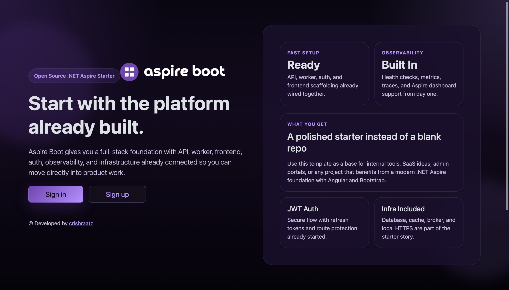
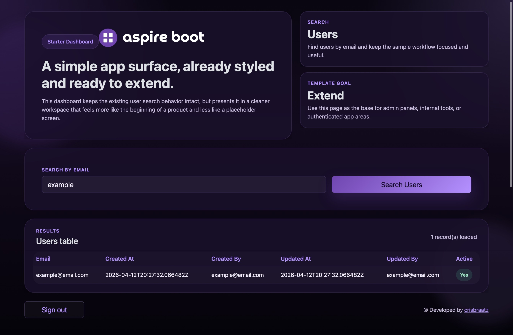
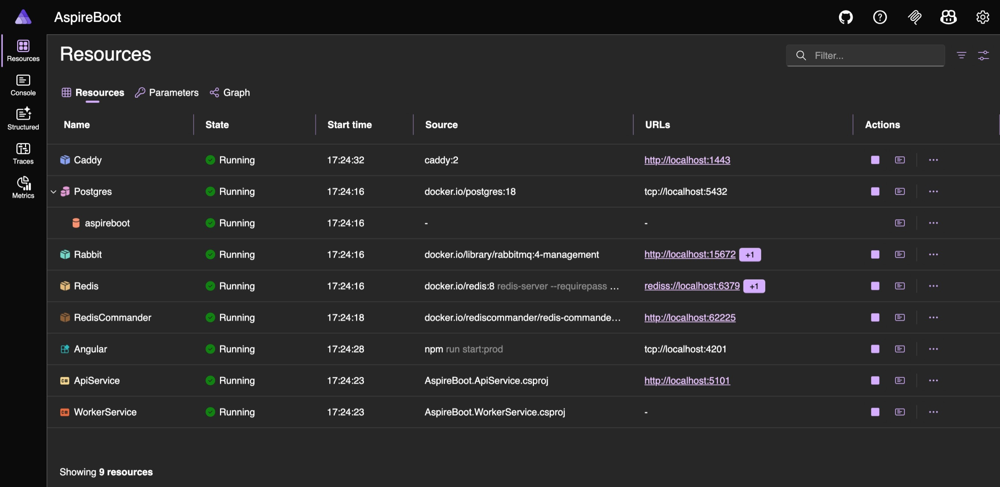
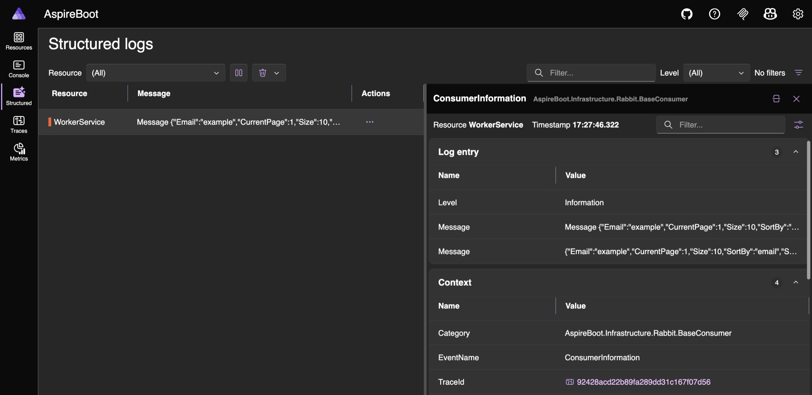
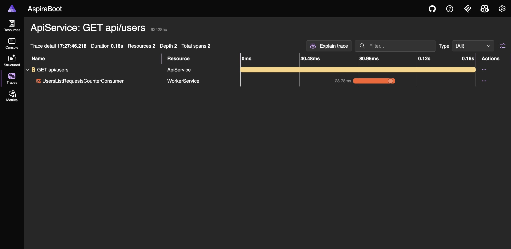
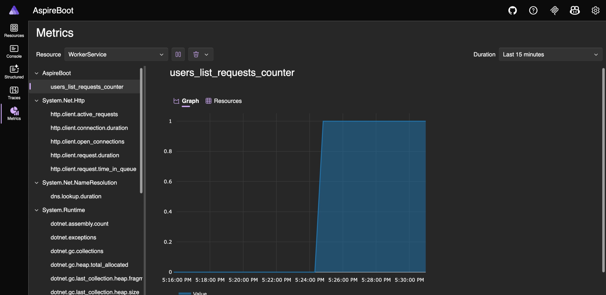

Start with the platform already built. Focus on your product next.
Aspire Boot gives you a real full-stack foundation for modern distributed apps: RESTful API, worker, Angular frontend, auth, observability, messaging, caching, database, and local HTTPS already wired together.
Built to help teams skip boilerplate, prove ideas faster, and ship with observability from day one.

resources visible in the Aspire dashboard from the first boot
auth with refresh-token flow and Redis-backed sessions
metrics, health checks, tracing, and Aspire dashboard support
resource-oriented users and sessions endpoints ready to extend
Why It Feels Different
This is not just a sample app. It is a head start with real architecture decisions already made.
Aspire Boot packages the repetitive work every greenfield project needs, so you can spend your energy on domain logic, customer workflows, and product differentiation.
Fast setup, less glue code
Skip the weekend of connecting frontend, API, worker, infra, auth, and environment wiring by hand.
Observability from day one
Health checks, metrics, distributed traces, and Aspire dashboard support come preconfigured instead of postponed.
Security already included
JWT auth, refresh-token flow, Redis session support, and protected app routes make the starter useful immediately.
Built to be extended
Clean project separation, tests, messaging, database, cache, and frontend scaffolding make it easy to grow into a product.
Showcase
A starter that looks alive from the first demo.
The latest build already shows both sides of the template well: a polished Angular shell for users and a backend stack you can inspect through resources, logs, traces, and metrics.
Landing and auth entry screens feel product-ready on desktop and mobile
The responsive Angular shell now presents the starter like a real app from the first click, not a placeholder waiting for redesign.
The authenticated app area already has a cleaner workflow and table-based user search
Protected routes, token refresh, and a usable dashboard layout make the frontend feel like a starter you can keep instead of throw away.

The Aspire resource view makes the full stack visible instead of hiding infrastructure setup
Frontend, API, worker, Caddy, Postgres, RabbitMQ, Redis, and companion tooling all come up as one coherent local environment.

Structured logs are already part of the starter, so runtime behavior is easier to inspect from day one
The sample implementation simply proves the wiring is there. From this base, teams can emit the logs they need across whichever services the product grows into.

Tracing is already wired across API and worker boundaries for distributed request visibility
The included flow demonstrates end-to-end trace propagation, giving teams a clear pattern for following requests as the system expands.

Metrics are already connected, so the template starts with measurable system behavior instead of guesswork
The sample counter is there to prove the plumbing. Once extended, the same setup supports the product-level signals your own services need to expose.

Included Out Of The Box
A practical stack for real-world greenfield work.
Aspire Boot gives you a cohesive baseline for modern service-based applications, with a frontend, RESTful backend surface, infrastructure resources, local HTTPS, and a developer-friendly topology already connected.
Developer experience
Local dashboard, proxied endpoints, SSL-ready setup, and a structure that helps new contributors understand the system quickly.
Operational confidence
Health endpoints, metrics, traces, and service defaults reduce the gap between prototype and production-minded foundation.
App patterns already started
Users and sessions endpoints, auth flow, worker processing, Redis usage, and repository patterns provide useful examples to extend.
AI-ready direction
OpenSpec support gives the project a stronger path for AI-assisted workflows and future agent-friendly integration.
Project Structure
Organized so you can grow it without rewriting it.
The project layout makes the architecture visible. Each major concern has a clear home, which helps the template feel useful for both solo builders and teams.
AppHost as the control center
Resources are declared centrally, so database, broker, cache, frontend, API, worker, and proxy all launch in a coherent local environment.
Separated by responsibility
API, worker, infrastructure, domain, defaults, frontend, and tests are split into focused projects, keeping changes easier to reason about.
Useful starter behavior included
Authentication, sample endpoints, repository abstractions, worker consumers, and tests turn the repo into a base you can actively build on.
Quick Start
From download to running stack in a few steps.
Aspire Boot is designed to get you to a working local environment fast, with frontend, API, worker, and infrastructure launched under the Aspire experience.
1. Install basics
Use .NET 10 SDK, Docker or Podman, and Node.js for the Angular app.
2. Trust local HTTPS
Generate dev certificates and local certs once, then let the stack run with friendly local domains.
3. Run AppHost
Launch the AppHost and get dashboard, API docs, frontend, broker, and cache tooling together.
Ready To Explore
Download the template and shape it into your next app.
A strong starter does not replace your product ideas. It clears the runway so those ideas can move faster.